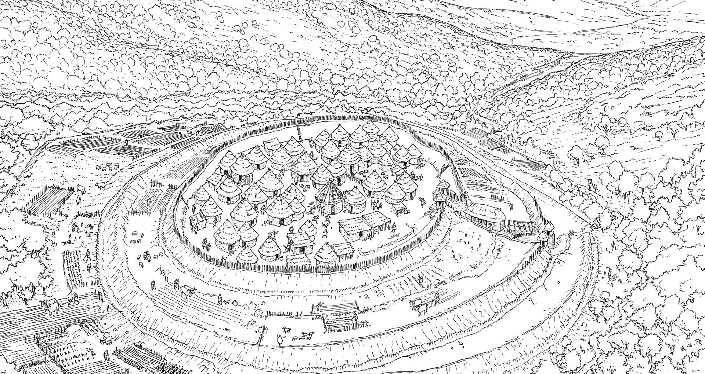
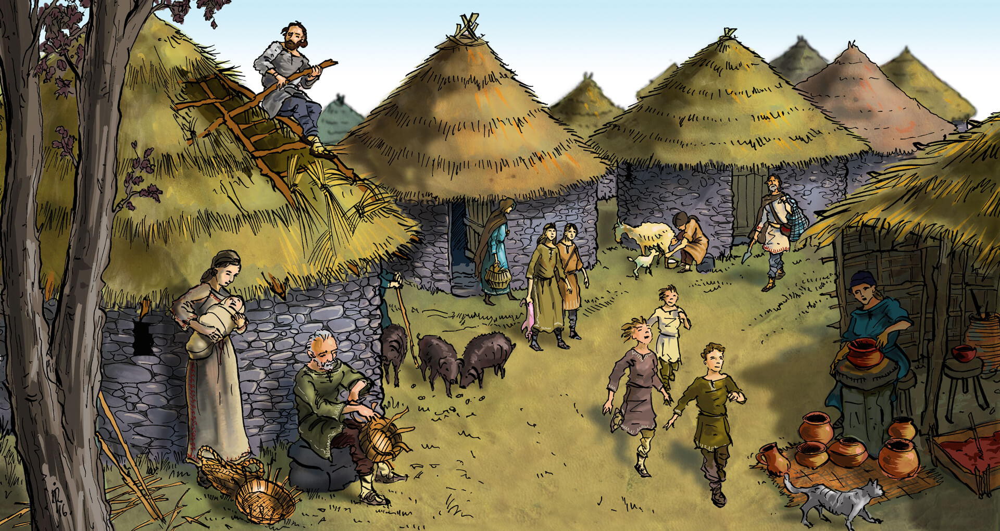
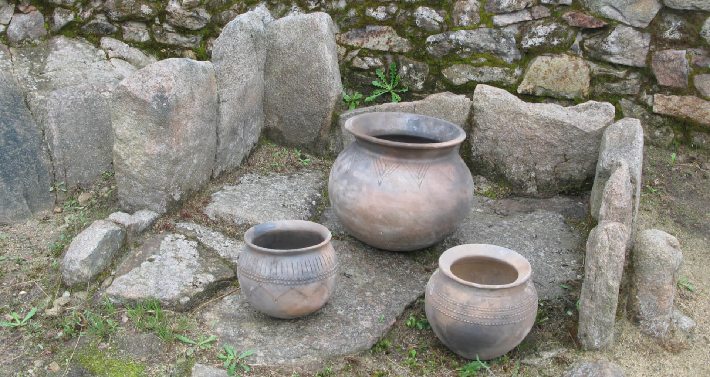

A
Cidá de Borneiro, como el resto de castros, era un poblado agrícola y
ganadero. Cultivaban cereales, legumbres y hortalizas (trigo, mijo,
cebada, alubias, garbanzos, berzas, nabos, etc.) en huertas situadas en
el antecastro, estando los cultivos de cereales más lejanos. Usaban
arados, azadas y hoces para preparar la tierra, y molinos de piedra
para moler los cereales.

La cabaña ganadera castreña era diversa: vacas, cerdos, cabras y
ovejas. Destacaba el ganado vacuno, ya que era el que aportaba mayor
número de productos alimenticios, fuerza de trabajo y era, a la vez, un
bien de intercambio. En Borneiro los restos óseos aparecidos en los
basureros que se encontraron en diversos puntos del castro, se
corresponden con ganado vacuno y ovicápridos. También se encontraron en
estos basureros, restos de berberecho, ostra, navaja, vieira, etc. La
pesca y el marisqueo fueron una importante fuente de recursos en los
castros cercanos al litoral.

Ilustración
de la vida cotidiana en el
castro
Del monte obtenían tanto madera (roble, castaño, avellano, etc.) como
alimentos, por ejemplo avellanas y bellotas. Así mismo, la caza también
significaba un aporte cárnico secundario, principalmente consumían
jabalí y ciervo.
En las excavaciones se hallaron algunos materiales (cuentas de collar
púnicas, fragmentos de vidrio y de ánforas romanas) que nos indican la
posibilidad de comercio a larga distancia. Los castreños intercambiaban
mineral (principalmente estaño) por cerámica (ánforas del
Mediterráneo), vino, salazones, conservas o productos exóticos como
perfumes, joyas, vidrio o telas.
Imagen 1. Cuentas de collar de pasta vítrea de procedencia púnica
encontradas en las excavaciones
Con toda seguridad, y como veremos en otro apartado, la metalurgia
jugaba un papel destacado en la economía de este castro. También la
minería pudo ser una actividad importante, existe justo en frente del
poblado una mina de recursos primarios cuya explotación pudo realizarse
en la misma época del castro.
s
¿Qué comían?
Hoy en día podemos reconstruir su dieta gracias a la paleobotánica y a
los análisis de los recipientes cerámicos que utilizaban para cocinar y
comer.
Consumían carne, pescado, leche, queso, vegetales, frutos secos, etc. Seguramente preparaban caldos vegetales hechos con berzas y ortigas, purés de habas y gachas de cereales, además de una especie de pan elaborado con la harina de las bellotas machacadas. Usaban grasa para cocinar, se encontraron muy pocas evidencias de importación de aceite del Mediterráneo. El vino sería consumido en contadas ocasiones, puesto que era un producto alóctono.
Se sabe que conocían técnicas de secado, ahumado y fermentación. Elaboraban a partir de la cebada una bebida alcohólica, denominada por los cronistas romanos zythos, parecida a la cerveza. Estos cronistas también nos hablan de la importancia cultural de la comida para los castreños y de que la ingesta de chivo en las celebraciones.
Cocinaban los alimentos directamente en el fuego o en recipientes
cerámicos suspendidos sobre el mismo con cuerdas. Además de los
recipientes para cocinar existían los destinados a comer y beber. No
tenemos constancia de cubiertos realizados en materiales duros como
hueso, por lo que podrían ser de madera, y no conservarse, o podrían
tomar los alimentos con la mano.

Reproducciones de recipientes
cerámicos aparecidos en el castro de Castrolandín (Cuntis-Pontevedra)